Это не официальный учебник и не “история успеха”. Это нормальная летопись того, как из случайного названия, войса, картинок, игр и странных фраз вырос свой маленький мир. Тут собраны четыре канала: общее, мутанты, мутанты-билды и мутные-болота.
С чего всё началось
greycat781 появился без торжественной заставки. 28 марта 2025 фригидный2009 зашёл с вопросом “че за грейкет”, Scarlet ответил, что не так, а через минуту уже выяснилось главное: название угарное, звучит “типо как бум бокс”, и вообще было поставлено первое, что пришло в голову. Это и стало базовым законом сервера: если случайная штука достаточно смешная, она остаётся.
Дальше сервер быстро стал не местом с одной темой, а комнатой, где всё превращается в материал. Войс, лаги, “кого звать”, Factorio, картинки, мемы, птичьи подборки, грибные вспышки, Gartic Phone, Spyfall, мутанты, болотная фантастика. Лор здесь не придумывали отдельно. Он накапливался сам, пока люди кидали то, что у них было в голове.
Главная формула greycat781: сначала никто не понимает, зачем это было отправлено, потом это уже часть истории.
Главные люди
Scarlet — тот, кто дал серверу имя и постоянно подбрасывает топливо: картинки, игры, GIF-хаос, сайт, форум, шпиона и визуальные эпохи.
фригидный2009 — ранний соавтор атмосферы. Пингует, зовёт, комментирует, запускает бытовую суету, а потом внезапно пишет большой сюжет про астронавта GC-781.
KroJluK-k0n@et О.О — человек коротких заклинаний. “мозг”, “ПТИЦЕКОРОБКА”, “УТОПЛЕННИК” и прочие штуки, которые выглядят как таблички из сна.
ВИКТОР — поздний голос больших названий: “МУТАНТ VS НАВАЛЬНЫЙ”, “ПРОСТО БОСС”, “НАЧАЛЬНИК”, “ЧЕЛОВЕК ЛОСЬ”.
Второй круг
woeloshell — ранний участник, который приносит имена, людей и странные формулировки вроде “ДЖУГАТЬ КЭШ”, “Лопатсьон”, “Одесский кебаб”.
neurocyclops — один из главных людей визуальной весны: картинки, “мобайл”, “dodo пес”, пчёлы и прочий ранний интернетный осадок.
уr3t-r1t — грибной исследователь и человек производственного вайба: грузди, свинушки, “гриб ID” и резкие сообщения.
aura…)W — гость творческих заданий: tiermaker, YouTube, “АЛЕ СЛОН”, просьбы нарисовать что-то в стиле Симпсонов.
охота за Червями — важный участник канала “мутанты”, где текст почти не нужен, потому что всё говорят рисунки.
Хронология без пафоса
28 марта 2025: рождение названия. Сервер ещё маленький, но уже понятно: тут будут жить случайности.
Весна 2025: эпоха войса, сборов и первых внутренних фраз. Много “зайди”, “кого звать”, “лагает”, “я тебя не слышу”.
Апрель 2025: начинается визуальный поток. В канал летят предметы, персонажи, животные, странные скриншоты и картинки без долгого объяснения.
Май 2025: сервер превращается в реактор мемов: реакции, вложения, внезапные словосочетания, ночные серии сообщений.
Лето и декабрь 2025: грибы и птицы становятся отдельными языками. Если кинул woodcock, kiwi или гриб ID — это уже сообщение.
Декабрь 2025: появляется плотная ветка мутантов: рисунки, боссы, абсурдные существа, MOBA-билды и “кто бы победил”.
Февраль 2026: “мутные-болота” дают серверу почти полноценную фантастическую повесть про GC-781, CUC0-LD, жабу-рогатку и рыбобоида.
2026: сервер получает сайт, форум, шпиона и нормальный архив лора. То, что раньше терялось в чате, теперь можно открыть как музей.
Картинки из “общего”
В “общем” картинки работают как погода. То прилетает обувь, то кот в очках, то сундук, то чей-то портрет, то клетка с существом, то огромная рыбная сеть. Смысл часто появляется уже после отправки.
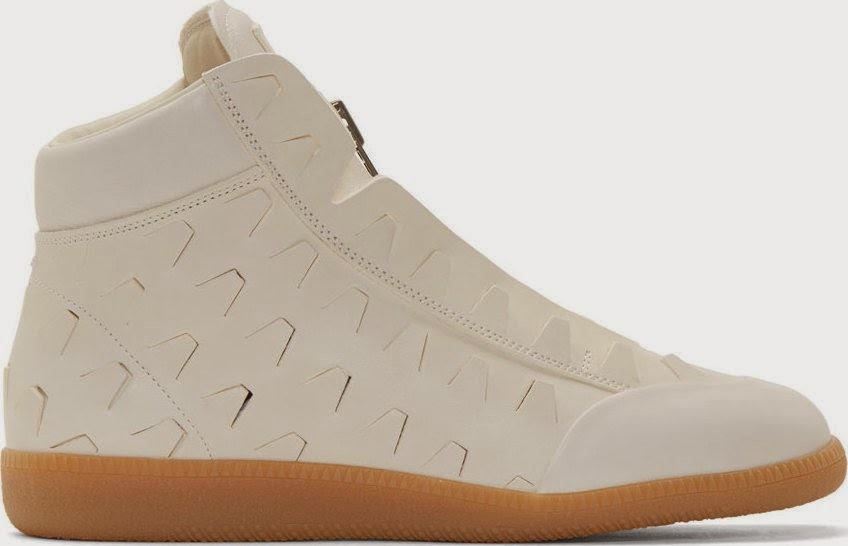
первая предметная волна
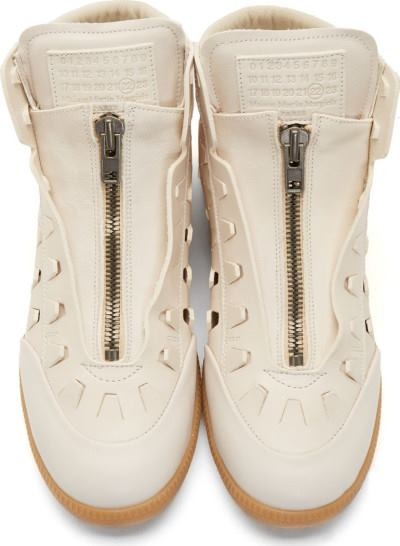
обувной диптих
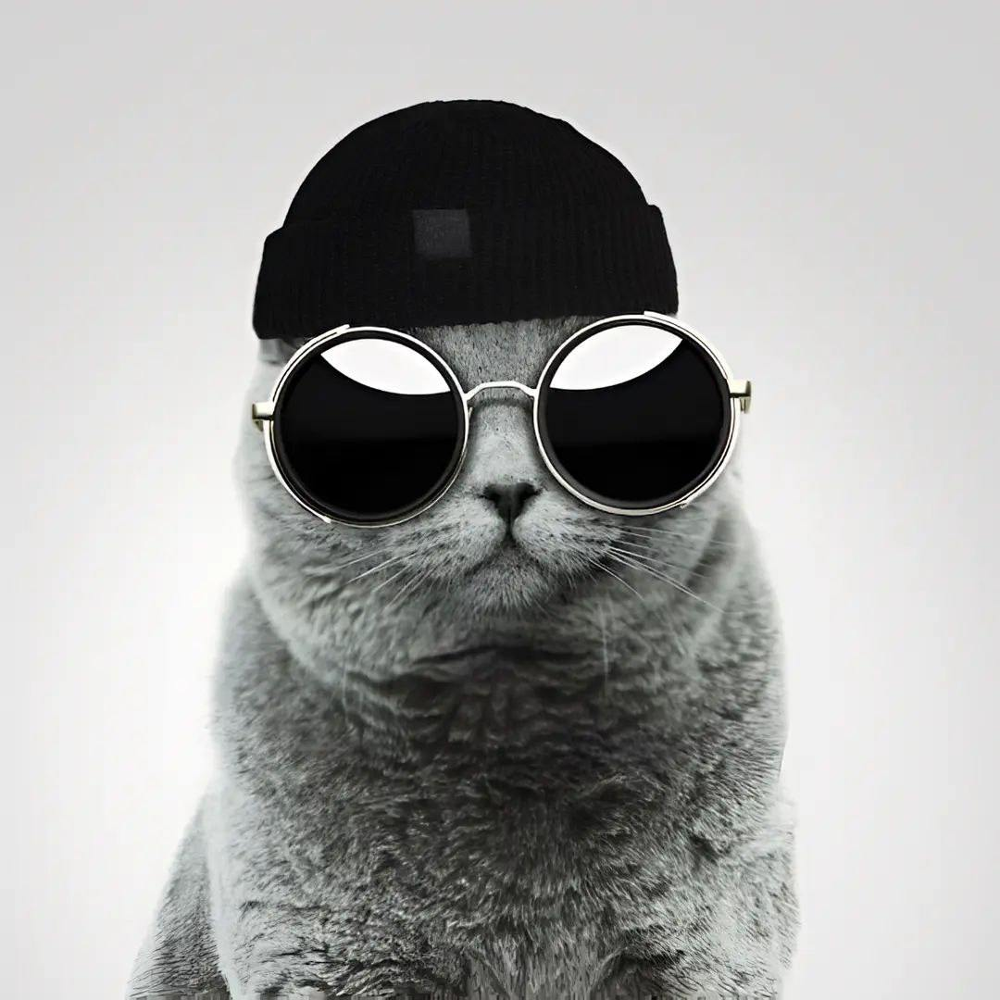
кот, который выглядит как участник суда
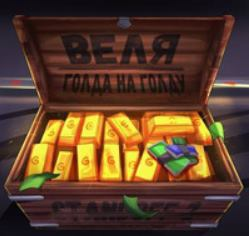
сундук как состояние канала
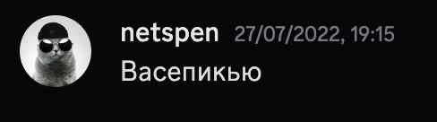
одиночный скрин-артефакт
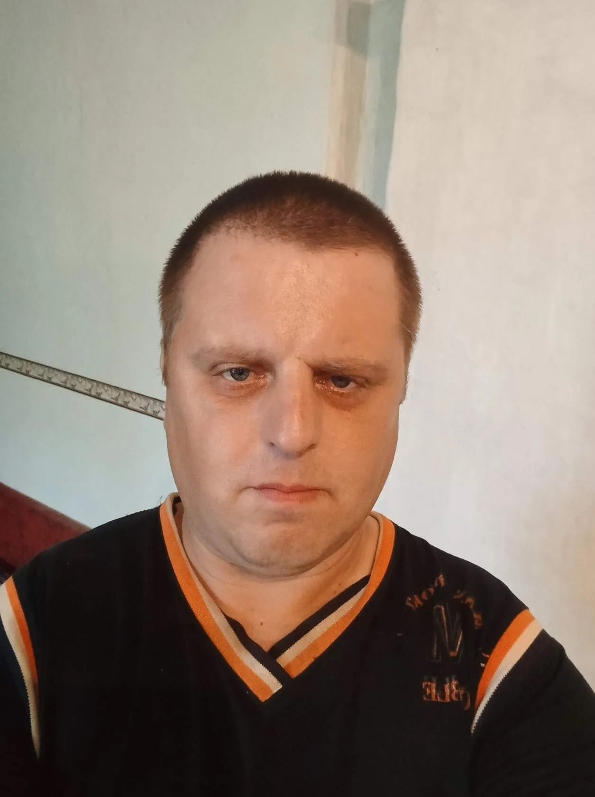
портретная эпоха
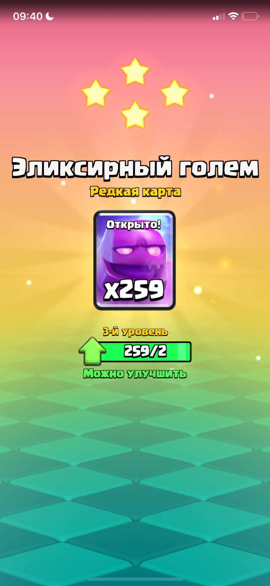
мобайл как отдельный жанр
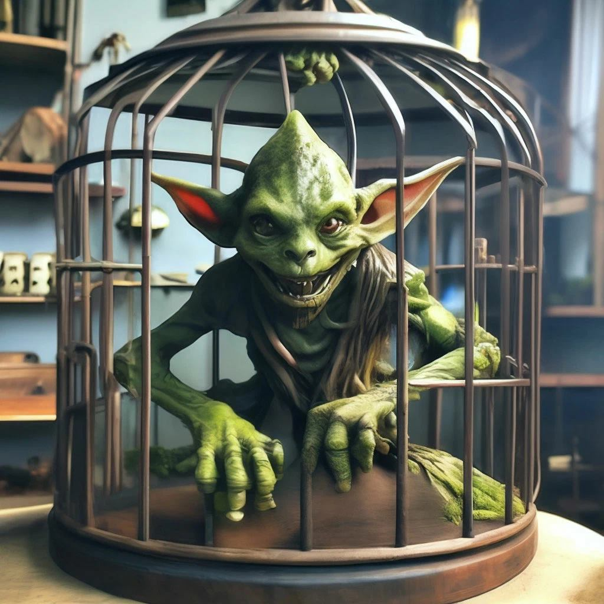
клетка, существо, вопрос без ответа
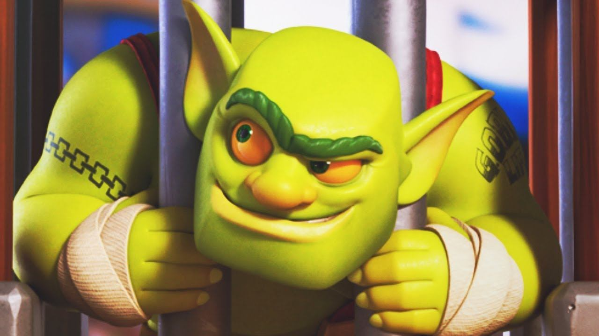
зеленый кабинет
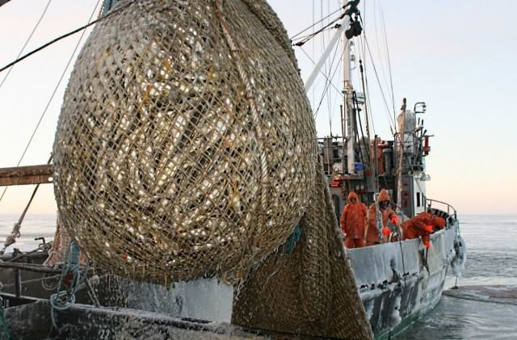
когда мем становится промышленным
Грибы, птицы и прочая вера
Грибная часть начинается как обычная подборка слов и картинок, но быстро становится почти религией. Груздь горький, свинушка толстая, fungi, mushroom, “гриб ID” — всё это не просто названия. Это способ говорить “я принёс странность, принимайте”.
Птичья линия работает так же. Woodcock, kiwi, duck, bird walk, toucan — птицы в канале не объясняют шутку, они сами шутка. Птица появляется, разговор на секунду меняет форму, и все будто понимают, что так и должно быть.
Игровой слой
Factorio мелькает ещё в первый день как идея “купить или не купить”. Позже появляются Gartic Phone и Spyfall. Это важный переход: сервер перестаёт быть только чатом и начинает собираться вокруг действий. Рисовать, угадывать, подозревать, спорить, кто шпион. Из этого потом логично выросла отдельная вкладка “Шпион” на сайте.
MOBA-билды из канала “мутанты-билды” — отдельный смешной музей. Там персонажи уже не просто картинки, а будто герои, которым надо выдать предметы, роль и матчап.
Мутанты
Канал “мутанты” почти не разговаривает текстом. Он показывает. Там существа, кривые войны, кислотные пейзажи, Питер Гриффин рядом с монстрами, рыбы с часами, улитки и болотные силуэты. Это не “арт-раздел”, а бестиарий сервера.
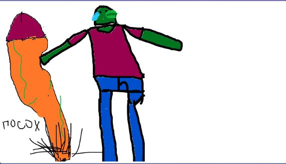
первый зал бестиария
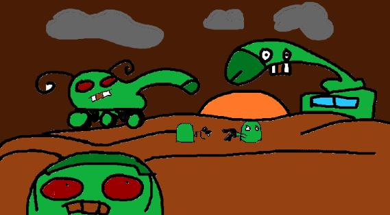
земля, где всё уже случилось
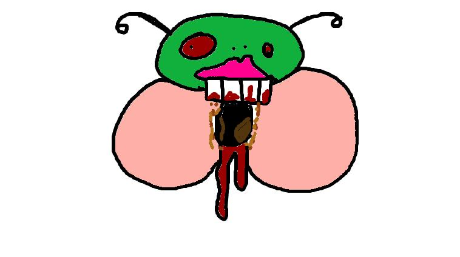
существо без объяснительной
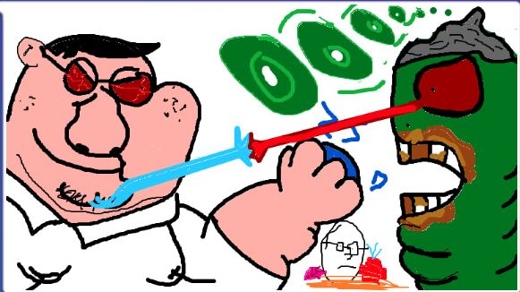
кроссовер, который не просили
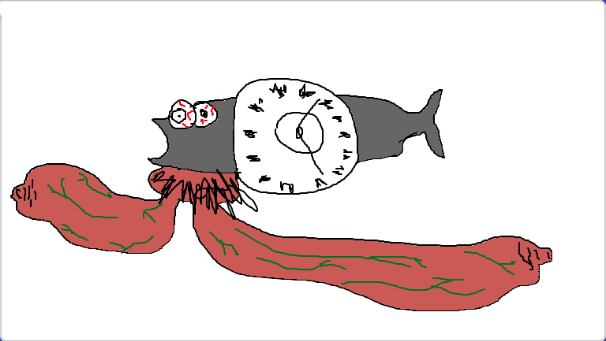
рыба времени
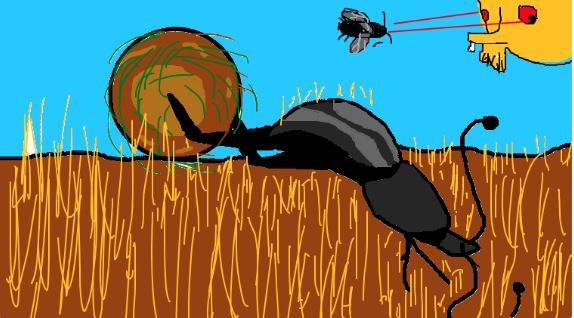
медленная угроза
Мутанты-билды
Если “мутанты” — это бестиарий, то “мутанты-билды” — его раздевалка перед матчем. Героям выдают предметы, роли и видимость баланса. Тут особенно смешно, что абсурдные персонажи получают почти серьёзную MOBA-логику.
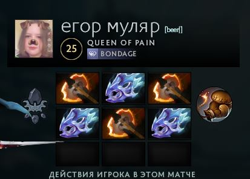
егор муляр выходит в матч
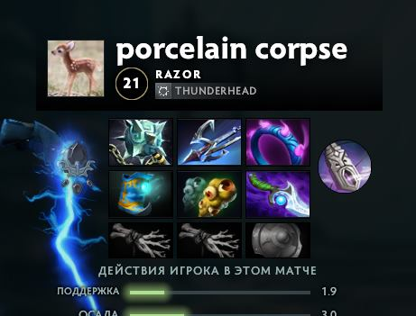
porcelain corpse и предметы
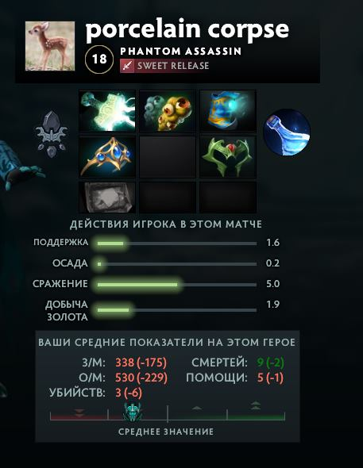
когда шутка уже с характеристиками
Мутные болота: отдельная повесть
14 февраля 2026 в “мутных-болотах” началась самая цельная сюжетная ветка. Главный герой — астронавт GC-781 с неизвестной планеты UR3-TR4. После катастрофы он уходит в странствия по галактикам, а его личный ассистент корабля CUC0-LD остаётся последним умным куском прежней цивилизации.
Потом всё ломается. Навигация сбоит, корабль падает на планету с густыми болотами, лесами и разрушенной экосистемой. GC-781 выживает, снимает ремни со скафандра, делает упряжь и находит огромную жабу-рогатку. Жаба становится транспортом, защитой и почти другом.
Но болота не пустые. За астронавтом следит рыбобоид-гуманоид — древний житель мутной воды. Он наблюдает, ждёт, нападает. В какой-то момент GC-781 защищает не себя, а жабу. После схватки рыбобоид исчезает, будто само болото его забрало. История остаётся открытой: астронавт стоит среди тумана, а планета явно ещё не сказала последнего слова.
greycat781 держится не на одной большой шутке, а на привычке всё сохранять в общий котёл. Один приносит картинку, второй отвечает фразой, третий делает из этого персонажа, четвёртый кидает билд, пятый через месяц вспоминает как будто так и было всегда.
Поэтому лор сервера выглядит не как книга, а как комната после длинной ночи: на столе мутанты, в углу грибы, на стене птицы, на полу болотный астронавт, а где-то сверху всё ещё висит вопрос “че за грейкет”.